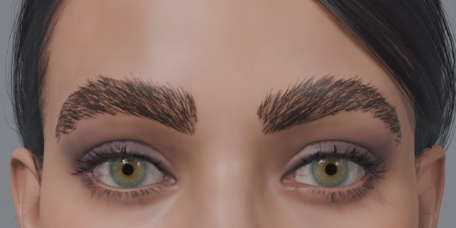
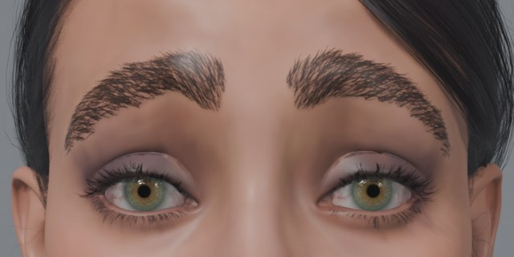

Ordre des signes LSF
Temps et lieu d’abord, verbe en fin de phrase, mot interrogatif à la fin : la phrase française est réorganisée selon la grammaire de la LSF.
Langue des signes française · 100 % local
Écrivez, parlez, projetez un film, signez devant la caméra ou ouvrez la caméra de votre téléphone : une seule chaîne de modèles locaux transforme le français en LSF, avec l’ordre des signes et le visage grammatical, et un avatar 3D la signe en direct.
Une chaîne, cinq entrées
Texte, voix, film, signes ou caméra : chaque entrée aboutit au même français, passe par les mêmes modèles et se termine sur le même avatar. Rien n’est dupliqué, tout se complète.
Écrivez une phrase ou importez une voix : la traduction est signée et peut s’exporter en vidéo.
Parlez au micro : la voix est transcrite, coupée à chaque pause, puis signée phrase après phrase.
Un film et ses sous-titres : chaque réplique est signée en synchronie, avec le bon locuteur.
Vous signez devant la webcam, l’avatar comprend et vous répond en LSF, avec le texte.
La caméra du téléphone voit la scène ; l’avatar apparaît dedans, la commente et la signe.
Démo en direct
La phrase s’ouvre dans le Studio, qui la traduit et la fait signer immédiatement.
Nouvel avatar
En LSF, les sourcils, la bouche et la tête font partie de la phrase. Notre avatar MetaHuman dispose de 51 expressions faciales, de sourcils dessinés poil par poil et de mains bien lisibles sur une tenue sombre, comme une interprète.



Sous le capot
Temps et lieu d’abord, verbe en fin de phrase, mot interrogatif à la fin : la phrase française est réorganisée selon la grammaire de la LSF.
Questions marquées par les sourcils et la tête, négation par un hochement de tête, clignements placés à la fin des propositions.
C0, un modèle génératif entraîné sur des interprètes, signe n’importe quelle phrase. B2 enchaîne de vrais signes du lexique avec des transitions apprises.
Chaque doigt respecte les limites de la main humaine, avec une profondeur apprise : bien moins de doigts tordus, des formes de main lisibles.
L’émotion de la voix module l’ampleur et le rythme des gestes ; dans un film, l’avatar change de rôle selon la personne qui parle.
Respiration, regard, inertie des bras et des doigts, queue de cheval qui suit la tête : l’avatar reste naturel même entre deux signes.
Fonctionnement